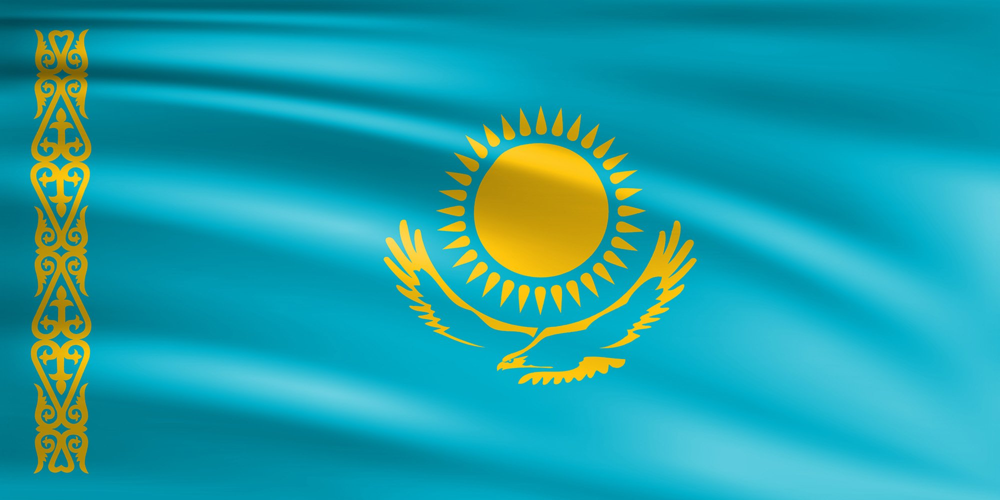

Flag
Emblem

| Capital | Nur-Sultan |
|---|---|
| Largest City | Almaty |
| Official languages Co-official |
Kazakh Russian |
| Ethnic groups (2020) | 68.5% Kazakh 18.9% Russian 3.3% Uzbek 1.5% Uyghur 1.4% Ukrainian 1.1% Tatar 1.0% German 4.5% Others |
| Religion (2020) | 72.0% Islam 23.1% Christianity 4.0% No religion 5.0% Others |
| • Government • President • Prime Minister |
• Unitary dominant-party presidential constitutional republic • Kassym-Jomart Tokayev • Askar Mamin |
| Area | 2,724,900 km2 (1,052,100 sq mi) (9th) |
| Population | 19,082,467 (64th) |
| Currency | Tenge (₸) (KZT) |